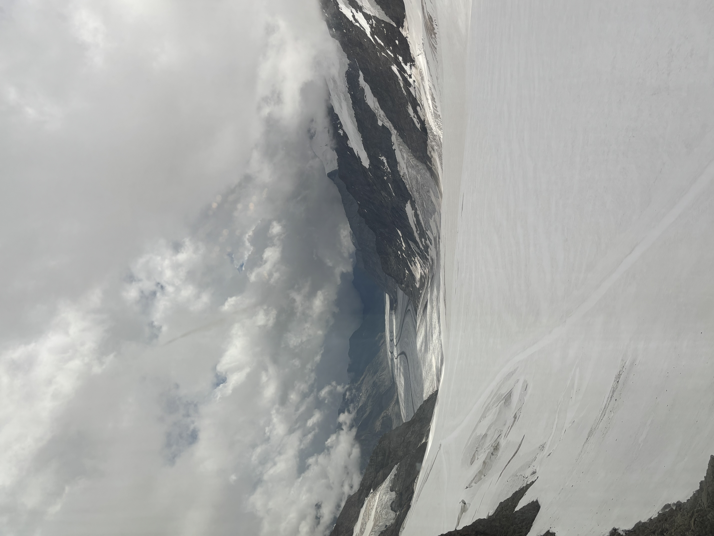

🎵 여행지의 감성을 담은 사운드
아래 재생 버튼을 누르면 여행을 준비하는 듯한 잔잔한 배경 사운드를 들으며 감상하실 수 있습니다.
📸 여행지 스케치: 구름 아래 펼쳐진 빙하
눈앞에 길게 펼쳐진 빙하와 낮게 내려앉은 구름이 여행의 생생한 순간을 보여줍니다.

🎥 생생한 여행지 현장 영상
카메라에 생생하게 담아온 여행지의 상쾌한 바람과 대자연을 눈과 귀로 직접 느껴보세요.
아름다운 자연과 평화로운 감성을 만끽할 수 있는 최고의 아카이브
아래 재생 버튼을 누르면 여행을 준비하는 듯한 잔잔한 배경 사운드를 들으며 감상하실 수 있습니다.
눈앞에 길게 펼쳐진 빙하와 낮게 내려앉은 구름이 여행의 생생한 순간을 보여줍니다.

카메라에 생생하게 담아온 여행지의 상쾌한 바람과 대자연을 눈과 귀로 직접 느껴보세요.